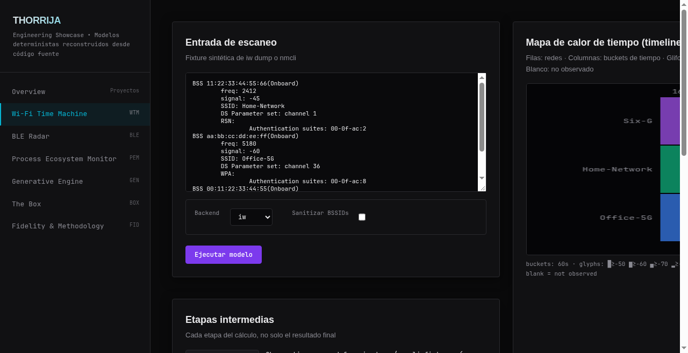
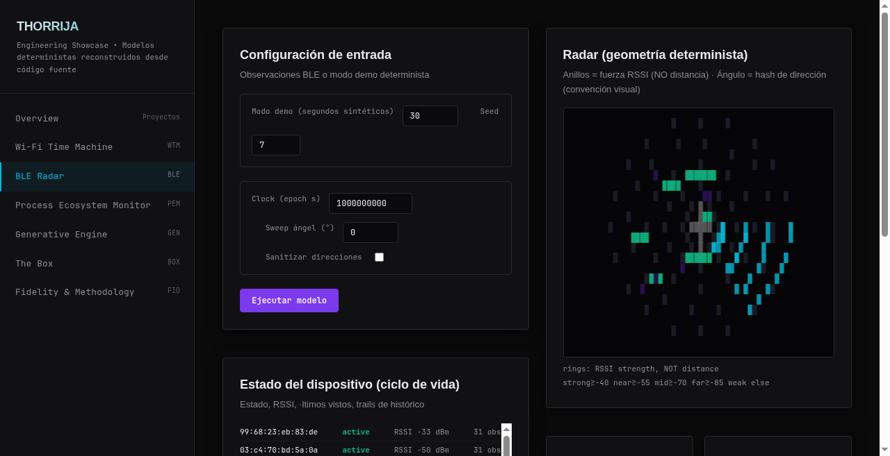
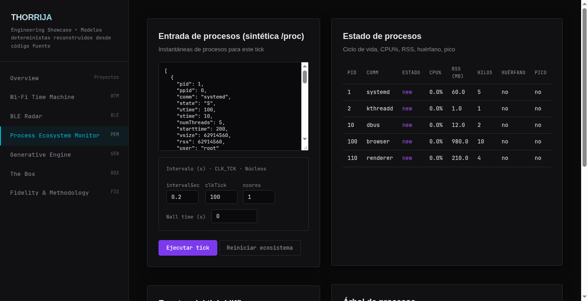
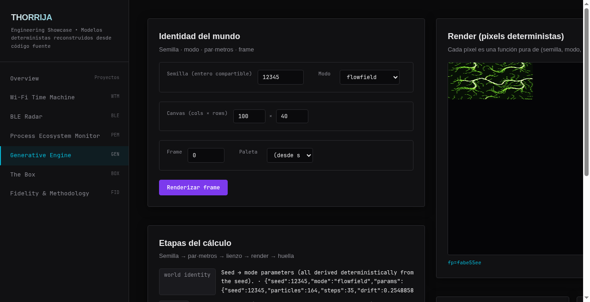
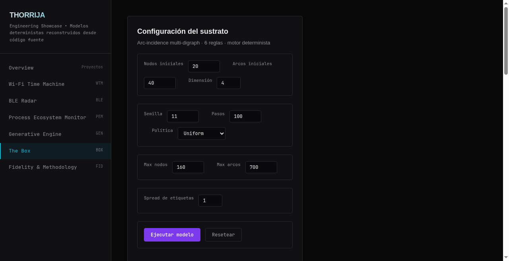

THORRIJA
Engineering Showcase — Quick Edition (English)
Deterministic computational models reconstructed from source code. A presentation-ready overview of what I built, how it works, and why it matters.
Author: Thorrija (Rubén N.)
Spain
November 2026
GitHub: github.com/ThorrijaDEV
1. Introduction
This showcase presents my engineering work: a collection of deterministic computational models and engineering tools that I designed, reconstructed, and tested. Each project is an independent reconstruction — built from source code, not executed from the original — so every output you see is computed from your input, not hardcoded.
Everything here runs deterministically: same input always produces the same output. There are no AI-generated results, no simulated demonstrations, and no hidden logic. What you see is what the code actually does.
This quick edition gives you the essential facts about each project: what it addresses, why it exists, what I built, how it works, and its limitations. For deeper technical detail, see the Technical Showcase edition.
2. The Projects
Below are all the projects in this showcase, organized by category. Each one includes a short description, what problem it addresses, and its current status.
2.1 Wi-Fi Time Machine
What it addresses: There is no easy way to see how your wireless environment changes over time — which networks appeared, on which channels, with what signal strength, and when.
What I built: A deterministic model that parses Wi-Fi scan dumps (iw or nmcli format), deduplicates networks by BSSID keeping the strongest signal, maps frequencies to 802.11 channels (2.4/5/6 GHz), infers security from authentication suites, and renders a time × channel heatmap with per-network sparklines.
Why it's interesting: It turns raw Wi-Fi scan data into a visual timeline you can explore, showing how your wireless environment evolves without needing live hardware.
Status: Completed — 18 tests, Level 4 fidelity.

Wi-Fi Time Machine laboratory — synthetic iw dump input, time × channel heatmap, and the intermediate stages of the calculation.
2.2 BLE Radar
What it addresses: Bluetooth LE devices broadcast their presence, but there is no simple way to see them as a radar: which devices are nearby, how strong their signal is, and how they appear and disappear over time.
What I built: A deterministic radar that simulates BLE observations with a device lifecycle state machine (appeared → active → fading → disappeared), RSSI EMA smoothing (alpha=0.4), strength bands (not distance), and an angle derived from SHA-256 of the MAC address (a visual convention, not orientation). Includes session replay and export.
Why it's interesting: It makes invisible Bluetooth devices visible as a deterministic radar, with honest labeling: RSSI is signal strength, never physical distance.
Status: Completed — 16 tests, Level 4 fidelity.

BLE Radar laboratory — deterministic demo configuration, radar geometry, and the device lifecycle state.
2.3 Process Ecosystem Monitor
What it addresses: Linux /proc contains rich process information, but reading and understanding it — CPU%, parent/child relationships, PID reuse — requires manual parsing and correlation.
What I built: A deterministic model that parses synthetic /proc-style snapshots, calculates CPU% from jiffie deltas (per-core normalized), builds the process tree from ppid, detects PID reuse via (pid, starttime) identity, re-homes orphans, and tracks lifecycle states (new → active/idle → dying → dead).
Why it's interesting: It turns raw /proc data into an understandable process ecosystem with births, deaths, and CPU accounting — all from synthetic snapshots, no host system access needed.
Status: Completed — 22 tests, Level 4 fidelity.

Process Ecosystem Monitor laboratory — synthetic /proc snapshot input and the derived process state table.
2.4 Terminal Generative Engine
What it addresses: Generative art usually depends on hidden random state, making it impossible to reproduce a specific frame or share a specific output.
What I built: A stateless splitmix64-style RNG where every pixel is a pure function of (seed, mode, frame, salt, index). Three modes: flowfield (analytic sine field), plasma (closed-form color), attractor (Clifford/Dejong strange map). O(1) frame seeking — jump to any frame without computing previous ones. SHA-256 world fingerprint for sharing.
Why it's interesting: Same seed + same frame = same result, always. No hidden state, no randomness at render time. Share a seed and anyone gets the exact same artwork.
Status: Completed — 24 tests, Level 4 fidelity.

Terminal Generative Engine laboratory — seed, mode, canvas and frame controls, with the deterministic render.
2.5 The Box
What it addresses: Most graphs store identity and lineage as explicit fields. The Box asks: what if identity and lineage are not stored at all, but emerge purely from rewrite rules?
What I built: An arc-incidence multi-digraph where nodes and arcs share an id space, arcs can point to arcs (second-order), and six rewriting rules (GATHER, BOND, TAG_PROP, QUIET, DESCEND, FUSE) modify the structure. Identity (who fused with whom) and lineage (who begat whom) are derived properties, not stored fields. Four engine policies, structural metrics (degrees, Gini, components, beta0/beta1, modularity), 14 named observables, null models, and empirical p-values.
Why it's interesting: It demonstrates how complex properties like identity and lineage can emerge from simple local rules without being explicitly stored — a different way of thinking about graph computation.
Status: Completed — 102 tests (42+25+12+23), Level 3 fidelity (pure-TS BLAKE2b, not byte-compatible with Python).

The Box laboratory — arc-incidence substrate configuration: node and arc counts, dimension, seed, steps, engine policy and tag spread.
2.6 Sigscan
What it addresses: Forensic investigators need to find and extract embedded file types (JPEG, PNG, ELF) inside binary blobs without knowing file boundaries.
What I built: A forensic magic-byte scanner in Go — detects embedded JPEG/PNG/ELF signatures and can carve them to disk. Standard library only, static binary.
Status: Completed.
2.7 Dnsdrill
What it addresses: Understanding DNS requires seeing the actual packet structure, not just resolved answers.
What I built: A DNS client that builds RFC 1035 packets by hand with struct: compression pointers, TCP fallback on truncation, 7 record types. A transparent view of the DNS wire protocol.
Status: Completed.
2.8 Silicon
What it addresses: Understanding CPU architecture requires building one from the ground up.
What I built: An 8-bit CPU built from scratch in Rust: own ISA, assembler, disassembler, deterministic VM, 32×32 virtual screen. Zero dependencies.
Status: Completed.
2.9 Forja
What it addresses: Compilers are often opaque black boxes; understanding compilation requires building one from scratch.
What I built: A Rust compiler that translates a u8-like language to SILICON assembly: memory variables, ALU on the accumulator, flag-based jumps, print_num with division by subtraction, end-to-end tests on the real VM.
Status: Completed.
2.10 Polea
What it addresses: Pub/sub messaging systems are often complex with many dependencies; understanding them requires building one from scratch.
What I built: A dependency-free pub/sub messaging broker in C++17: own binary protocol with 13-byte header, length-delimited framing and CRC-32, ordered forwarding with a single thread over poll(2), bounded queues with backpressure, CLI client to publish and listen to topics.
Status: Completed.
2.11 Cask
What it addresses: Content-addressable storage systems need deduplication and corruption recovery.
What I built: An append-only content-addressable store in pure C: own binary format with CRC32 + SHA-256, content deduplication, automatic recovery from corruption or truncation.
Status: Completed.
2.12 Neondrift
What it addresses: Arcade games typically require many assets; building one from scratch demonstrates game programming fundamentals.
What I built: An arcade endless runner in a single HTML: own physics/collisions, WebAudio chiptune (zero assets), particles, local high score.
Status: Completed.
2.13 Clickwheel + Console
What it addresses: Music players and web consoles are often separate experiences; combining them shows cross-platform UI design.
What I built: Two players, one idea: music you operate. iPod-style Android app with haptic click-wheel (Compose) playing local music + YouTube Music search; vintage hi-fi web console, no dependencies.
Status: Completed.
2.14 Syspeek
What it addresses: System monitoring dashboards often require many dependencies; a curses-based TUI shows what's possible with minimal dependencies.
What I built: Pure curses system TUI — zero deps. Per-core CPU, memory, network rates, top processes read directly from /proc with hand-written parsers.
Status: Completed.
2.15 Hackdeck
What it addresses: Pentest utilities are often scattered across many tools; a single-file offline deck makes them accessible anywhere.
What I built: Offline pentest utility deck in single HTML (~15 KB): base64, hex, JWT, SHA-1/256/512, XOR, Caesar, UUID. Zero network, zero telemetry — browser only.
Status: Completed.
2.16 Canarytrap
What it addresses: Detecting unauthorized access requires canary tokens that alert when touched.
What I built: Self-hosted canary tokens: fake AWS keys, .env decoys, web bugs firing webhook on touch. Stdlib only, logs never leave your VPS.
Status: Completed.
2.17 Loglens
What it addresses: Detecting security threats in logs requires SIEM-like analysis without heavy infrastructure.
What I built: Pocket SIEM: detects SSH brute force, user enumeration, web scans, error spikes in logs — zero deps, 100% offline, HTML report.
Status: Completed.
2.18 Reconkit
What it addresses: Reconnaissance for authorized assets requires subdomain discovery, port scanning, and directory busting in one tool.
What I built: Multi-tool reconnaissance for authorized assets: subdomains via CT logs, async port scanner, dir busting — SQLite sessions, unified HTML report.
Status: Completed.
2.19 Port Authority
What it addresses: Knowing which process listened on which port and when requires historical tracking.
What I built: A network port historian for Linux: records who listened where/when in local SQLite ledger.
Status: Completed.
2.20 Side Projects & Experiments
Red Neuronal Modular: Neural network architecture built from scratch in Python with a collaborator, extensible via plugins.
Sistema de IA personal: In development: automation of digital tasks and personal workflows.
Automatizaciones personales: Small scripts and tools that solve daily frictions on my Linux desktop.
Edición de vídeo: Productions with over 20,000 views across CapCut and DaVinci Resolve.
Experiencia OSINT: Exploration of cybersecurity tools in controlled environments.
3. How to Demonstrate
Each project section above describes what to show. For the interactive labs (WTM, BLE, PEM, GenArt, The Box), open the showcase web application, select the laboratory from the sidebar, adjust parameters, and click run. All models are deterministic — same seed and input always produce the same output.
For static projects (Sigscan, Dnsdrill, Silicon, etc.), refer to their respective GitHub repositories for source code and usage.
4. Contact & Repositories
All models are deterministic: same input → same output. No hardware, no API keys, no external services required for demonstrations. All data shown is synthetic or computed from your input — nothing is fabricated.